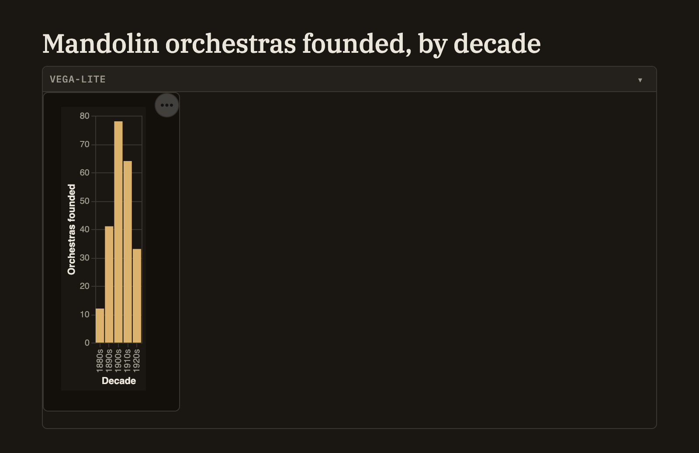

Charts
You can drop a live, interactive chart right into a note. Hover any bar or point for a tooltip, and use the chart's corner menu to save it as an image. A chart can hold its own numbers, or draw from live data elsewhere in your project — a query over your knowledge base, a table, or the output of a compute cell — so it stays up to date instead of freezing a snapshot.
Adding a chart
The quickest way is to right-click in the editor and choose Elements → Chart…. Pick a shape — Bar, Line, Area, Scatter, Time Series, or Pie — and Minerva drops in a ready-made chart with sample numbers already in place, with your cursor sitting in the data so your first edit is just swapping in your own values.
A chart lives in a chart cell that holds a short specification describing what to draw. Here is what a simple bar chart looks like:
```vega-lite
{
"data": { "values": [
{ "category": "A", "value": 28 },
{ "category": "B", "value": 55 },
{ "category": "C", "value": 43 },
{ "category": "D", "value": 91 }
] },
"mark": "bar",
"encoding": {
"x": { "field": "category", "type": "nominal" },
"y": { "field": "value", "type": "quantitative" }
}
}
```You describe the data, the shape to draw, and which values go on each axis; Minerva works out the axes, scales, and legend for you. That concise style covers ordinary bar, line, area, scatter, and pie charts. For a chart that needs finer control than the concise style allows, there is also a more detailed form where you spell out every part yourself — reach for it only when you need something the concise style can't express.
How it looks
The chart draws right in the note, sized to fit the column so it never spills off the side. It's fully interactive: hover a bar or point for a tooltip, and open the "⋯" menu in the corner to save the chart as an image. Colors follow your current theme automatically, so a chart looks at home whether you're in a light or dark look — though any color you set yourself is always kept.

Live data
The simple approach is to list your numbers right in the chart, as above. But a chart can also pull its data from elsewhere in your project so it updates as that data changes. In place of listing values, point the chart at one of these:
A chart that draws from live data gets a refresh button, so after the underlying data changes you can redraw it in place without touching the note.
A chart draws only from numbers in the note or from data already in your project — it won't reach out to the web to fetch anything. This keeps notes that arrive from an import or from someone else safe to open and view.